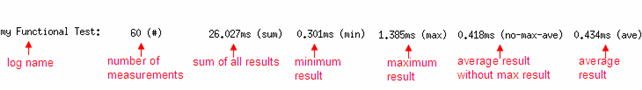

TimerLogger
TimerLogger is defined to retrieve the execution time of a section of test method code in UTM. You can control whether to enable the TimerLogger with some testflow flag. If different values are assigned to the testflow flag, the same test method can be used both in engineering with TimerLogger on and in production with TimerLogger off.
The definition file of TimerLogger is in the directory /opt/hp93000/soc/testmethod/include/timerlogger.hpp. You can customize it according to your own needs.
Class definition
Constructor
TimerLogger(const std::string& loggerName, bool isEnabled = true);
Member functions
void reset();
void start();
void stop();
void reportToString(std::string &output );
void reportToUI( );
bool isStarted();
bool isUsed();
double getMinimum();
double getMaximum();
double getSum();
int getNumberOfMeasurements();
bool isEnabled();
void enable(bool isEnabled);Syntax
TimerLogger log_obj("log_name",1);
log_obj.mem_func();mem_func
is one of the member functions of TimerLogger.
Constructor
TimerLogger(const std::string& loggerName, bool isEnabled = true);
It creates an object of TimerLogger. You can use its member functions to retrieve the execution time of a specific measurement.
loggerName |
name of the Logging |
isEnabled |
whether the TimerLogger is enabled It can be true or false. |
Member functions
reset()
void reset();
This function resets the value of the TimerLogger to a low level timer.
start()
void start();
This function starts the TimerLogger.
stop()
void stop();
This function stops the TimerLogger.
reportToString()
void reportToString(std::string &output);
This function reports the logged result to the specified string.
output |
the string to hold the logged result |
reportToUI( )
void reportToUI();
This function reports the logged result to the UI report window.
isStarted()
bool isStarted();
This function returns whether the TimerLogger is started.
isUsed()
bool isUsed();
This function returns whether the TimerLogger is enabled. The TimerLogger can only be used when it is enabled.
getMinimum()
double getMinimum();
This function returns the minimum execution time logged.
getMaximum()
double getMaximum();
This function returns the maximum execution time logged.
getSum()
double getSum();
This function returns the sum of all the execution time logged.
getNumberOfMeasurements()
int getNumberOfMeasurements();
This function returns the number of measurements done.
isEnabled()
bool isEnabled();
This function returns whether the TimerLogger is enabled.
enable()
void enable(bool isEnabled);
This function enables the TimerLogger. TimerLogger can be used only when it is enabled.
Example
In the following example, the testflow flag debug_mode controls whether to enable the TimerLogger. When debug_mode is 3, the TimerLogger is enabled and the execution time of functional test is logged. The execution time result will not be printed after every testflow execution. To print the execution time statistics of the functional tests in the UI report window, execute the following command:
$/opt/hp93000/soc/testmethod/bin/tmm_console -e dumpTimeLogger
The result displayed on the UI report window is like:

//for testmethod framework interfaces
#include "testmethod.hpp"
//for testmethod API interfaces
#include "mapi.hpp"
#include "timerlogger.hpp"
static TimerLogger myTimer("my Functional Test");
class MyFunctionalTest: public testmethod::TestMethod
{
protected:
/**
*Initialize the parameter interface to the testflow.
*This method is called just once after a testsuite is created.
*/
virtual void initialize()
{
}
/**
*This test is invoked per site.
*/
virtual void run()
{
int debugMode;
GET_TESTFLOW_FLAG("debug_mode",&debugMode);
if(debugMode == 3)
{
myTimer.enable(true);
}
else
{
myTimer.enable(false);
}
ON_FIRST_INVOCATION_BEGIN();
CONNECT();
Sequencer.reset();
myTimer.start();
FUNCTIONAL_TEST();
myTimer.stop();
ON_FIRST_INVOCATION_END();
TESTSET().cont(true).judgeAndLog_FunctionalTest();
}
~MyFunctionalTest()
{
myTimer.reportToUI();
}
};
REGISTER_TESTMETHOD("MyFunctionalTest", MyFunctionalTest);Functional changes
- Introduced in SmarTest 6.5.3